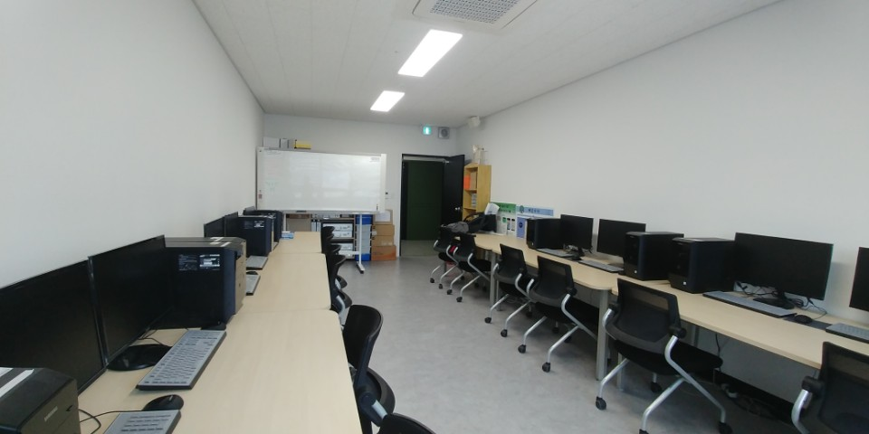
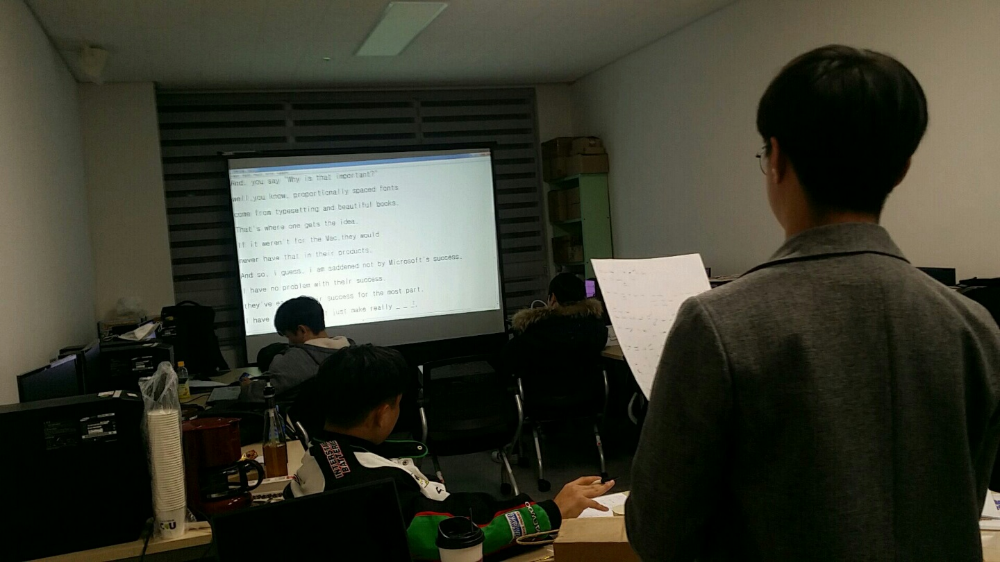
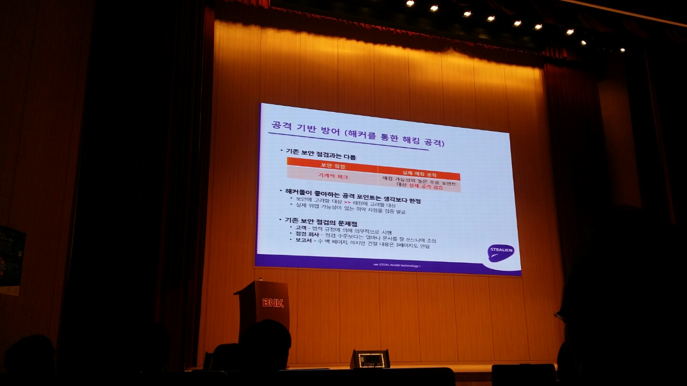
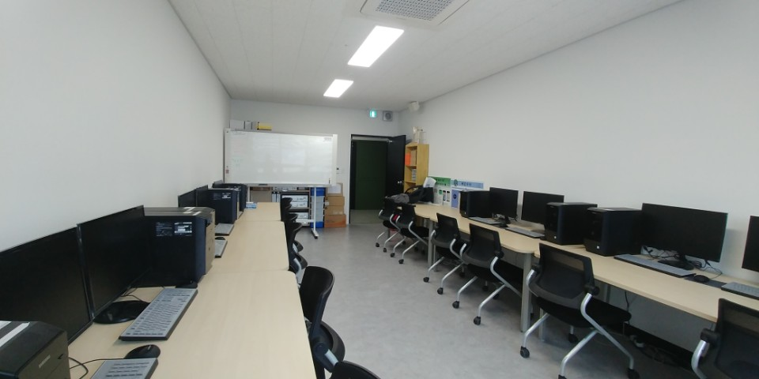

Rapport
About us
Rapport는 현재까지 총 17명으로 구성되어있으며, 정보교류와 친목활동을 위해 만들어졌습니다.
아직 1학년이고 배우고싶은게 많은 저희는 관심사를 통합하여 4개의 분과를 형성하였으며, 분과별로 시간을 서로 조율하여서 같이 공부할수있는 시간표를 만들었습니다.
2학기 시간표
| 월요일 | 화요일 | 수요일 | 목요일 | 금요일 | |
|---|---|---|---|---|---|
| 1교시 | 수업(A,B,C) | 수업(A,B) | |||
| 2교시 | 수업(A,B,C) | 수업(A,B,C) | 수업(A) | 수업(B) | 수업(A,B) |
| 3교시 | 수업(A,B) | CAD | 수업(A) | 수업(B) | 일본어 |
| 4교시 | 수업(A,B) | CAD | 수업(A,B) | 일본어 | |
| 5교시 | 수업(A) | 수업(B) | 수업(A,B) | 수업(A,B) | |
| 6교시 | 교양 | 수업(A,B) | 수업(A,B) | ||
| 7교시 | 교양 | 교양 | 수업(A,B) | 수업(A,B) | 프로그래밍 |
| 8교시 | 교양 | 수업(A,B) | 프로그래밍 | ||
| 9교시 | 영어 | ||||
| 10교시 | 영어 |
아직 1학년이고 배우고싶은게 많은 저희는 관심사를 통합하여 4개의 분과를 형성하였으며, 분과별로 시간을 서로 조율하여서 같이 공부할수있는 시간표를 만들었습니다.
poto_ex
△ 실습실의 모습
지천관 607호에 위치하고있는 실습실의 내부모습입니다. 여럿이 사용하는장소이니만큼 청결에 항상 힘쓰고있습니다.

△ 영어분과
주 1회 약 2~3시간으로 이루어져있는 영어분과는, 분과장인 이주형과 분과생 6명으로 이루어져있습니다.
영어를 듣고 쓰는 형식으로 되어있으며, 영어실력을 향상시키기위해 서로서로 노력하고있습니다.
△ AutoCAD로 만든 사고의 모습
2학기 계열기초과목인 AutoCAD과목을 조금더 이해하고자 만들어진 CAD분과는 Rapport전원이 분과생으로 들어와있습니다.
사용가능한 실습실의 컴퓨터가 많지않아, 주로 지천관 622호에서 실시하며, 도면그리기, 유용한 기능공유등 여러가지 활동을 하고있습니다.

△ 시원포럼 세미나의 모습
학교에서 듣는 특강뿐만 아니라, 외부에서 하는 특강을 듣기도 합니다.
2학기 시작이후 백스코, 부산은행등에서 진행하는 특강을 여럿 듣기도 하고, 행사, 박람회에 참석하여 다양한 기술들을 보기도합니다.

지천관 607호에 위치하고있는 실습실의 내부모습입니다. 여럿이 사용하는장소이니만큼 청결에 항상 힘쓰고있습니다.
주 1회 약 2~3시간으로 이루어져있는 영어분과는, 분과장인 이주형과 분과생 6명으로 이루어져있습니다.
영어를 듣고 쓰는 형식으로 되어있으며, 영어실력을 향상시키기위해 서로서로 노력하고있습니다.
2학기 계열기초과목인 AutoCAD과목을 조금더 이해하고자 만들어진 CAD분과는 Rapport전원이 분과생으로 들어와있습니다.
사용가능한 실습실의 컴퓨터가 많지않아, 주로 지천관 622호에서 실시하며, 도면그리기, 유용한 기능공유등 여러가지 활동을 하고있습니다.
학교에서 듣는 특강뿐만 아니라, 외부에서 하는 특강을 듣기도 합니다.
2학기 시작이후 백스코, 부산은행등에서 진행하는 특강을 여럿 듣기도 하고, 행사, 박람회에 참석하여 다양한 기술들을 보기도합니다.